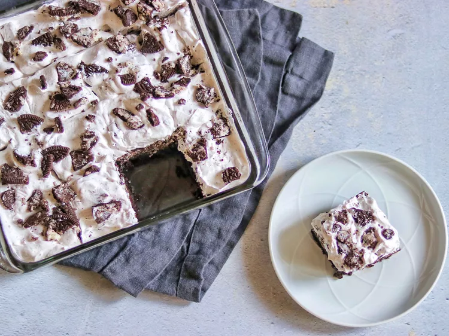

Cookies and Cream Brownies Recipe

Fig: Freshly baked cookies and cream brownie
Description
If you love Oreo cookies, you'll love these cookies and cream brownies! They are easy to make by topping homemade chocolate brownies
with a layer of Oreo cookies and a creamy topping for a deliciously decadent dessert.
Cookies and Cream Brownies are a delightful fusion of rich, fudgy brownies and the beloved cookies and cream flavor.
These brownies typically feature a dense, chocolatey base that is made even more indulgent with the addition of crushed chocolate sandwich cookies,
such as Oreos. The cookies are often folded into the batter, creating pockets of crunchy, creamy goodness throughout each bite.
Cookies and Cream Brownies are perfect for any occasion, whether you're looking for a delicious dessert to share with friends and family,
or a sweet treat to enjoy on your own. Their irresistible combination of flavors and textures makes them a crowd-pleaser that is sure to satisfy
any sweet tooth.
Ingredients
- 1 ½ cups white sugar
- ¾ cup all-purpose flour
- ½ cup high-quality unsweetened cocoa powder
- ½ teaspoon salt
- ¼ teaspoon baking powder
- ¾ cup unsalted butter, melted
- 3 large eggs
- 1 teaspoon vanilla extract
- 32 chocolate sandwich cookies (such as Oreo), divided
- 1 (8 ounce) container frozen whipped topping (such as Cool Whip), thawed
Steps
Step 1 : Preheat the oven to 350 degrees F (175 degrees C). Grease a 9-inch square baking pan.
Step 2 : Mix sugar, flour, cocoa powder, salt, and baking powder together in a mixing bowl.
Step 3 : Whisk butter, eggs, and vanilla together in a separate bowl. Add butter mixture to the flour mixture and mix until well combined.
Step 4 :
Pour 1/2 of the batter into the prepared baking pan and smooth out with a spatula. Add 16 Oreo cookies in an even layer (4 rows of 4 cookies),
then spread the remaining 1/2 of the batter on top.
Step 5 :
Bake in the preheated oven until edges are brown and center is set, 30 to 35 minutes.
Step 6 :
Remove pan from the oven and set on a wire rack. Let brownies cool completely, at least 30 minutes.
Step 7 :
Crush 12 of the remaining Oreo cookies. Place whipped topping in a bowl and fold in crushed cookies; spread mixture over the top of the brownies.
Crush the remaining 4 cookies; sprinkle over the top of the whipped cream mixture.
Step 8 :
Keep refrigerated until you are ready to slice and serve.